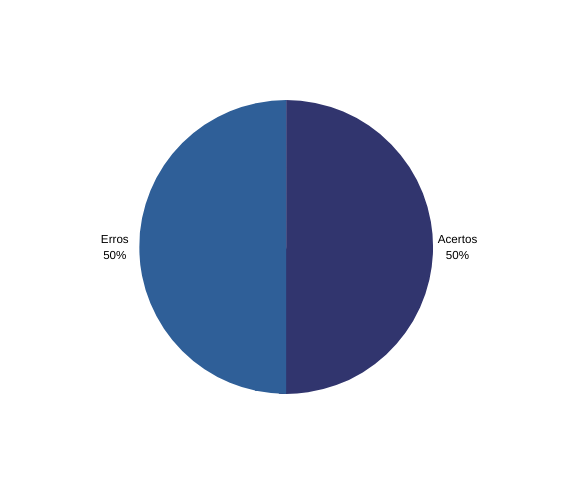

Verificação da priorização
1. Contexto
- Técnica utilizada: Inspeção com checklist.
- Autor do documento: Thiago e Matheus.
- Inspetor: Alex.
2. Checklist
Abaixo segue a tabela com as informações da lista de controle de verificação da priorização:
| Id | Questões | Resposta | Respostas pós Reunião de Consolidação |
|---|---|---|---|
| 1 | Todos os requisitos funcionais foram priorizados? | ✔ | ✔ |
| 2 | Os requisitos não-funcionais foram priorizados? | ✔ | ✔ |
| 3 | Utilizou mais de uma técnica de priorização? | ✖ | ✔ |
| 4 | As técnicas utilizadas foram aplicadas de forma correta? | ✔ | ✔ |
| 5 | A execução da técnica de priorização foi gravada? | ✖ | ✔ |
| 6 | O cliente/usuário participou da priorização? | ✖ | ✔ |
Tabela 1: checklist do documento de priorização
Fonte: autores
3. Acompanhamento
Foram verificados 6 itens no artefato de priorização, no qual 3 estão corretos. Segue o gráfico:

Figura 1: Gráfico acertos/erros checklist
Fonte: autores
4. Conclusão
A técnica utilizada, o MoSCoW, foi aplicada de forma correta, mas falta a gravação da execução da técnica com a participação do cliente/usuário. Seria interessante aplicar mais de uma técnica na etapa de priorização.
5. Reunião de Consolidação
No dia 10/09/2022 os integrantes Christian, Alex e Matheus discutiram a respeito dos resultados do checklist e, após essa conversa, foi gerado um novo resultado.
Antes da data referenciada, em algumas discussões em aula com a presença do professor, foi observado o resultado do checklist, e notou-se a falta de mais uma técnica de priorização.
Diante disso, em meio a essas discussões, o integrante Christian havia se comprometido a implementar o uso de mais uma técnica de priorização, sendo ela a Return On Investment.
Com isso, na data referenciada, o autor da verificação (Alex), um dos autores do artefato (Matheus) e o integrante Christian, que havia se comprometido a realizar as correções, se reuniram para analisar como estava o andamento dessas correções, e o retorno foi de que havia sido implementada a nova técnica mencionada, com a presença de um usuário do aplicativo e que essa elicitação havia sido gravada, atendendo os itens faltantes do checklist.
Histórico de Versão
| Versão | Data | Descrição | Autor | Revisor |
|---|---|---|---|---|
| 0.1 | 17/08/2022 | Criação do documento | Alex | Paulo |
| 0.2 | 10/09/2022 | Adição da Reunião de consolidação | Matheus | Thiago |